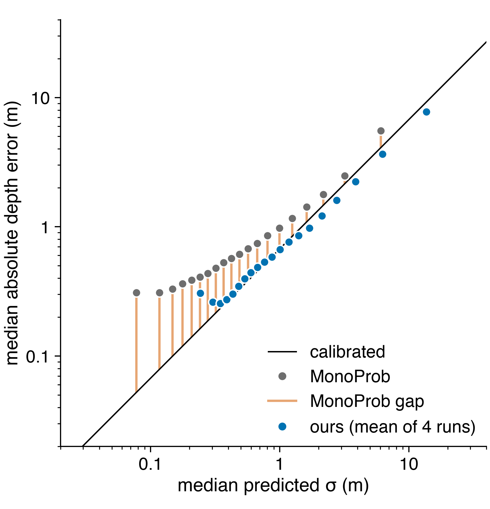

Range-aware uncertainty calibration in self-supervised monocular depth
The Chinese University of Hong Kong, Shenzhen
Without ground-truth depth in training or calibration, we cut the worst-range calibration error of a self-supervised monocular depth model's uncertainty by 89%.
Problem. Robots act on the uncertainty of self-supervised depth models, yet it is evaluated only by ranking, so its magnitude goes unchecked. On KITTI, MonoProb underestimates its error in all five depth ranges, with typical error up to 3.7× larger than its uncertainty implies. Retraining on self-supervised signals alone never beat a single ground-truth-fitted global scale in any of 42 runs.
Figure 1 makes this visible. Each point groups pixels with similar predicted uncertainty σ and plots their typical actual error. Points on the line are calibrated: their typical error is what σ predicts. MonoProb's grey points all lie above it: its uncertainty is too small, most of all where it is most confident. Ours, in blue, moves onto the line for most groups; its two most confident groups stay above it and its least confident sit slightly below. Under a mean-square criterion, which weights rare large errors more, the gap narrows from 3.6× to 1.5× but does not close.

Figure 1. Released MonoProb base model (ResNet-18, 640×192) and ours, mean of 4 runs, on our KITTI validation split.
Manuscript in preparation. Preliminary results on our validation split; held-out evaluation pending. Preprint expected November 2026. A one-page summary is available on request: ijunsuk9797@gmail.com